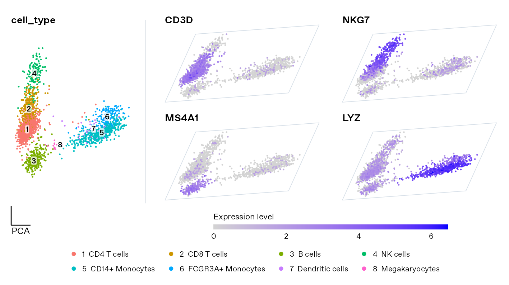

Seurcery extends Seurat visualizations with feature layers, violin gradients,
and dot summaries. This tutorial uses the bundled pbmc_small object
for reproducible code examples. The larger preview figures use PBMC3K.
README · Release notes · Earlier v0.8.6 tutorial
Use SeuratObject >= 5.0.0 and ggplot2 >= 3.5.0. Install Seurat to run
the examples below. The grid package is included with R.
install.packages(c("Seurat", "ggplot2", "patchwork", "rlang"))
install.packages("Seurcery_0.90.tar.gz", repos = NULL, type = "source")
library(Seurat)
library(ggplot2)
library(Seurcery)
packageVersion("Seurcery")
# 0.90The metadata reference map is shown on the left. Each gene is displayed on
an aligned thin panel on the right, using the same cells and embedding.
Expression comes directly from the selected assay's normalized
data layer. All gene panels share a colorbar labeled
Expression level.
data("pbmc_small", package = "SeuratObject")
rds <- pbmc_small
rds$cell_type <- Idents(rds)
gl <- c("LYZ", "MS4A1", "CD3E", "NKG7")
FeatureLayerPlot(
rds,
features = gl,
group.by = "cell_type",
reduction = "pca",
assay = "RNA"
)The bundled object already has PCA coordinates. For your object with UMAP
coordinates, set reduction = "umap" (the default). The function
uses the first two dimensions of an existing reduction; it does not compute
PCA or UMAP. A lower-left marker uses two equal, perpendicular black lines and
automatically displays the selected embedding name.

Characters and factors use Seurat's default discrete colors. The left title
is the metadata column name. To customize colors, name the palette with the
category levels and pass a manual scale to group.scale.
pal <- setNames(c("#3FA55E", "#50B5D8", "#EA8350"), levels(rds$cell_type))
FeatureLayerPlot(
rds, gl, group.by = "cell_type", reduction = "pca",
group.scale = scale_color_manual(values = pal)
)
# A fill scale updates the same reference map and legend.
FeatureLayerPlot(
rds, gl, group.by = "cell_type", reduction = "pca",
group.scale = scale_fill_manual(values = pal)
)Numeric metadata uses an embedded Reds palette with a separate continuous colorbar; no additional palette package is needed. Convert numeric category codes to a factor when they should be treated as categories.
FeatureLayerPlot(
rds, gl, group.by = "nCount_RNA", reduction = "pca"
)Use feature.cols to change the gene-expression gradient, or a
continuous color/fill scale in group.scale to change the numeric
metadata gradient. All text defaults to black and can be changed with
text.color.
order = TRUE draws higher values last so they appear above
lower values. This applies to gene expression and numeric metadata.
order = FALSE keeps the original cell order.
| Argument | Default | Meaning |
|---|---|---|
ncol | 2 | Number of gene-panel columns. |
gap.x | 0.18 | Horizontal gap; must be greater than zero. |
gap.y | 0.16 | Vertical gap; at least max(0.10, title.gap + 0.037). |
title.gap | 0.04 | Gene-title offset above its panel; at least 0.037. |
Gaps are expressed in normalized plot coordinates. Smaller values make the layout more compact. Invalid gaps cause an error before plotting, keeping the panels and their reserved title space separate.
p <- FeatureLayerPlot(
rds, gl, group.by = "cell_type", reduction = "pca",
order = TRUE, gap.x = 0.06, gap.y = 0.11, title.gap = 0.04
)
ggsave("feature-layers.pdf", p, width = 180, height = 101, units = "mm")Partial missing or non-finite expression and metadata values generate warnings with counts. They are retained as missing-colored points (grey by default), without zero-filling. Zero expression is a valid observed value.
An entirely missing metadata column or requested gene produces an error,
as do non-finite embedding coordinates, a missing assay or reduction, absent
requested genes, and missing normalized data. The function does
not fall back to counts.
Embedding cells absent from the selected assay are omitted from all panels with a warning. If the embedding and assay have no shared cells, plotting stops with an error.
To generate the categorical, continuous, manual-color, and compact examples as one PDF, run:
Rscript examples/feature-layers.R /path/to/feature-layers.pdfThe existing gradient functions remain available. Use a named palette to associate each gene with its color in a stacked violin plot.
gene_cols <- setNames(c("#3FA55E", "#50B5D8", "#EA8350", "#8B72BE"), gl)
p <- Seurat::VlnPlot(
rds, features = gl, group.by = "cell_type", pt.size = 0,
stack = TRUE, flip = TRUE, add.noise = FALSE
) + scale_fill_manual(values = gene_cols)
p + geom_vln_gradient(alpha_min = 0.05, alpha_max = 1)
p + geom_vln_gradient() + geom_dot_gradient(guide = FALSE)Each gene has its own opacity range. Both flip settings and both addition
orders are supported. For exact expressed percentages at zero, use
add.noise = FALSE when constructing the Seurat violin plot.
The *_quantile arguments are fractions of the plotted range,
not empirical quantiles.
Rscript examples/stacked-gradients.R /path/to/stacked-gradients.pdfRuiying Chen (chenruiying21@mails.ucas.ac.cn).